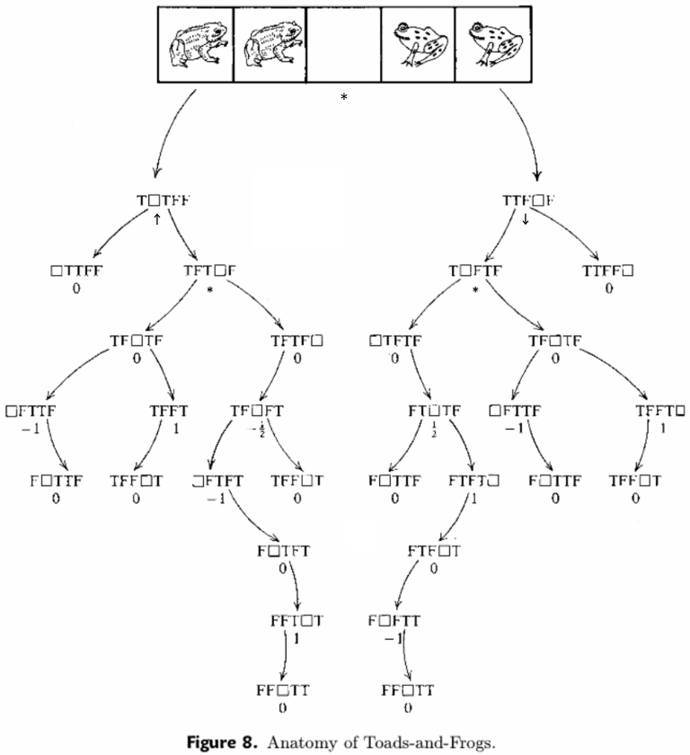
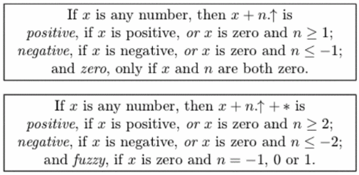

有一天，小 d 发现了一个很经典的小游戏：跳青蛙。
游戏在一个 $\mathbf 5$ 个格子的棋盘上进行。在游戏的一开始，最左边的两个格子上各有一个向右的青蛙，最右边的两个格子上各有一个向左的青蛙。
每次移动可以选取一个青蛙，向这只青蛙的前方移动一格到空格子中或跳过前方的一个不同朝向的青蛙并移动到空格子中。
这个游戏本身当然难不倒小 d，小 d 轻松地就解决了这个游戏。但是一个人玩游戏实在是太寂寞了，于是小 d 找到了小 m 和他一起玩耍。小 d 规定，自己只能操控向右的青蛙，小 m 只能操控向左的青蛙。
小 d 很快发现，这个游戏想要做到双方轮流行动，就无法达到交换所有青蛙的游戏结局。于是，小 d 打开了 $m$ 个游戏，并规定双方轮流行动，每次选择其中一个游戏并控制自己的青蛙行动一步 (不能不动)。小 d 发现，这么做的话就能够使大部分的游戏最终都交换所有的青蛙了。
由于小 d 是坑队友高手，所以他们玩了一会之后，就开始互相坑害对方，都希望使对方无法行动。他们约定，当轮到一方行动时，若其所有的青蛙都无法行动，则对方获得游戏的胜利。正当博弈论大师小 d 计算着谁会成为最后的胜者时，电脑卡死了。
小发现，只能 kill 掉一些游戏才能使剩下的游戏进行下去了。由于电脑已经卡死了，小 d 无法自由选择 kill 掉哪些游戏，只能运行系统自带的随机 kill 小程序 (ps: 话说电脑都卡死了怎么还能运行程序啊)。具体来说，小 d 运行这个随机 kill 小程序之后，每个游戏有 $\dfrac 12$ 的概率被 kill 掉，有 $\dfrac 12$ 的概率能够继续下去。游戏之间被 kill 掉的概率是独立的。
小 d 思考了一番，决定如果运行小程序之后他的胜率过低，就直接重启电脑。这时，小 d 突然发现自己已经不记得刚才轮到谁行动了，于是他决定综合考虑自己先手和后手的胜率。
小 d 并不擅长概率论，他想让你告诉他运行小程序后，剩下的局面为小 d 必胜、小 m 必胜、先手必胜、后手必胜的概率各为多少，这样他才能更好地决定是否重启电脑。
为了避免精度问题，输出答案乘 $2^m$ 之后对 $998244353$ 取模的结果。
注意：题目并不保证输入的所有 $m$ 个状态中小 m 和小 d 之前的总行动步数相差不超过 $1$，但是保证不会出现起始状态无法到达的状态。
我们使用一个长度为 $5$ 的字符串来表示一个状态，其中，L 表示面朝右的青蛙，R 表示面朝左的青蛙，_ (下划线) 表示空格子。例如，初始状态为 LL_RR。
本题含有多组数据，第一行包含两个非负整数 $T, C$ ($1 \leq C \leq 100$)，分别表示测试点编号和数据组数。
对于每组数据，第一行包含一个正整数 $n$ ($n \leq 23$) 表示不同状态的棋盘个数。
接下来 $n$ 行，每行一个长度为 $5$ 的字符串 $s_i$ 和一个正整数 $a_i$ ($\displaystyle \sum_{i=1}^n a_i = m \leq 10^6$)，分别表示棋盘的状态和在该状态下的棋盘的个数。
保证输入的字符串合法且不重复。
输出一行，包含四个整数，分别表示小 d 必胜 (即 L 的控制方必胜)、小 m 必胜 (即 R 的控制方必胜)、先手必胜、后手必胜的概率乘 $2^m$ 之后对 $998244353$ 取模的结果。(其中 $\displaystyle m = \sum_{i=1}^n a_i$)
注意到双方的操作的不同的，因此这是一个不平等博弈。
对于不平等博弈，我们通常可以使用超现实数 (surreal numbers) 的理论来解决，具体可以参见 Conway 的《On Numbers and Games》或者《Winning Ways for Your Mathematical Plays》(稳操胜券) 来学习。
于是可以得到跳青蛙游戏的各个状态值如下 (下图来自《Winning Ways for Your Mathematical Plays》, P63)：
其中 $* = \left\{ 0 \mid 0 \right\}, \uparrow \mathbin= \left\{ 0 \mid * \right\}, \downarrow \mathbin= \left\{ * \mid 0 \right\}$。且满足性质 $* = \left\{ \uparrow \mathbin \mid \downarrow \right\}, * + * = 0, {\uparrow + \downarrow} = 0$。
考虑任何一个固定的状态 (即告诉你哪些游戏被 kill 了，哪些还存活着)，我们可以根据下面法则将它们的状态值相加，得到一个形如 $x + n.\uparrow$ 或 $x + {n.\uparrow} + *$ 的形式，其中 $x$ 是实数，$n$ 是整数。(约定 $n.\uparrow \mathbin= \begin{cases} \overbrace{\uparrow + \uparrow + \cdots + \uparrow}^{n \text{ copies}} & n > 0 \\[0.6em] 0 & n = 0 \\[0.2em] \underbrace{\downarrow + \downarrow + \cdots + \downarrow}_{- n \text{ copies}} & n < 0 \end{cases}$)
由《Winning Ways for Your Mathematical Plays》第 68 页结论，有 
(ps: $\uparrow \mathbin= \left\{ 0 \mid * \right\}$ 的左方必胜 (Positive) 性比较容易验证，$\uparrow \! * = \left\{ 0, * \mid 0 \right\}$，双方均可走到 $0$ 态，因此为先胜态 (Fuzzy))
于是接下来这个问题就变成一个计数题了。
对于 $x$ 部分，考虑使用生成函数。
设状态中有 $n_1$ 个 $1$，$n_{-1}$ 个 $-1$，$n_{1/2}$ 个 $\dfrac 12$ 以及 $n_{-1/2}$ 个 $- \dfrac 12$。
令 $F \left( x \right) = \left( 1 + x \right)^{n_1} \left( 1 + \dfrac 1x \right)^{n_{-1}} \left( 1 + \sqrt x \right)^{n_{1/2}} \left( 1 + \dfrac 1 {\sqrt x} \right)^{n_{-1/2}}$，则将其展开后的第 $x^u$ 项系数即为 $\pm 1, \pm \dfrac 12$ "凑" 出 $u$ 的方案数。
这个多项式的各项系数是比较好求的，因为 $F \left( x \right) = x^c \left( 1 + x \right)^d \left( 1 + \sqrt x \right)^e$，两边都是二项式系数，因此只需要对其中一个多项式的系数做一个前缀和，枚举另一项的系数即可。(当然如果你要 FFT 我无话可说)
如果 $u \neq 0$，则根据上表，整个游戏的胜负已经可以判别。
对于 $u = 0$ 的情况，首先容易求出用 $*$ 凑出偶数个和奇数个时的情况。
然后设有 $U$ 个 $\uparrow$ 和 $D$ 个 $\downarrow$，则 $G \left( x \right) = \left( 1 + x \right)^U \left( 1 + \dfrac 1x \right)^D$ 的 $x^c$ 项系数即为 $\uparrow$ 和 $\downarrow$ 凑出 $c.\uparrow$ 的方案数。
和上面处理 $F \left( x \right)$ 的方法类似，还是可以处理出 $G \left( x \right)$ 的系数的前缀和 ($\leq -2$)，后缀和 ($\geq 2$)，以及在 $x^{-1}, x^0, x^1$ 处的系数。
然后枚举 $*$ 的个数为偶数还是奇数，直接根据上表统计对应游戏的个数即可，不要忘记最后都乘上一个 $2^Z$ ($Z$ 为零值游戏的个数，因为加入一个零值游戏不改变游戏的状态)。
总时间复杂度 $O \left( C \cdot m \right)$。
#include <bits/stdc++.h>
using std::string;
typedef long long ll;
const int N = 1000054, mod = 998244353;
enum surreal {zero, po_5, po1, ne_5, ne1, star, up, down};
const std::map <string, surreal> M = {
{"_LLRR", zero},
{"_LRLR", zero},
{"R_LLR", zero},
{"R_LRL", zero},
{"LR_LR", zero},
{"RR_LL", zero},
{"LRR_L", zero},
{"RLR_L", zero},
{"LLRR_", zero},
{"LRLR_", zero},
{"RL_LR", po_5},
{"RRL_L", po1},
{"LRRL_", po1},
{"RLRL_", po1},
{"LR_RL", ne_5},
{"_RLLR", ne1},
{"_RLRL", ne1},
{"R_RLL", ne1},
{"L_RLR", star},
{"LL_RR", star},
{"LRL_R", star},
{"L_LRR", up},
{"LLR_R", down}
};
int n, n_5, n1, n_arrow;
int a[8], u[N];
int fact[N], finv[N];
int posi, nega, fuzzy, _zero;
inline void add(int &x, const int y) {x += y - mod, x += x >> 31 & mod;}
inline void sub(int &x, const int y) {x -= y, x += x >> 31 & mod;}
inline int min(const int x, const int y) {return x < y ? x : y;}
inline int max(const int x, const int y) {return x < y ? y : x;}
ll PowerMod(ll a, int n, ll c = 1) {for (; n; n >>= 1, a = a * a % mod) if (n & 1) c = c * a % mod; return c;}
void init() {
int i;
for (*fact = i = 1; i < N; ++i) fact[i] = (ll)fact[i - 1] * i % mod;
--i, finv[i] = PowerMod(fact[i], mod - 2);
for (; i; --i) finv[i - 1] = (ll)finv[i] * i % mod;
}
inline ll C(int n, int r) {return (ll)fact[n] * finv[r] % mod * finv[n - r] % mod;}
void work() {
int i, j, c, q; ll evs, ods, S, Z, posi_ = 0, nega_ = 0, zero_ = 0, __buf__[5] = {0}, *fy = __buf__ + 2;
char state[7]; n = 0, memset(a, 0, sizeof a);
for (scanf("%d", &q); q; --q)
scanf("%s%d", state, &c), a[M.find(string(state))->second] += c, n += c;
n_5 = a[po_5] + a[ne_5], n1 = a[po1] + a[ne1], n_arrow = a[up] + a[down];
for (i = 0; i <= n_5; ++i) u[i] = C(n_5, i);
for (i = 1; i <= n_5; ++i) add(u[i], u[i - 1]);
for (i = 0, c = a[po1] * 2, j = a[ne_5] - c; i <= n1; ++i, c -= 2, j += 2) {
if (j < n_5) posi_ = (posi_ + (u[n_5] - (j >= 0 ? u[j] : 0) + mod) * C(n1, i)) % mod;
if (j > 0) nega_ = (nega_ + u[min(j - 1, n_5)] * C(n1, i)) % mod;
if (0 <= j && j <= n_5) zero_ = (zero_ + C(n_5, j) * C(n1, i)) % mod;
}
a[star] ? ods = evs = PowerMod(2, a[star] - 1) : (ods = 0, evs = 1);
for (i = 0, c = a[up]; i <= n_arrow; ++i, --c) fy[max(min(c, 2), -2)] += C(n_arrow, i);
for (i = -2; i < 3; ++i) fy[i] %= mod;
S = PowerMod(2, a[star] + n_arrow), Z = PowerMod(2, a[zero]);
posi = (S * posi_ + (evs * (fy[1] + fy[2]) + ods * fy[2]) % mod * zero_) % mod * Z % mod;
nega = (S * nega_ + (evs * (fy[-1] + fy[-2]) + ods * fy[-2]) % mod * zero_) % mod * Z % mod;
fuzzy = (ods * (fy[-1] + fy[0] + fy[1]) % mod * zero_) % mod * Z % mod;
_zero = (evs * *fy % mod * zero_) % mod * Z % mod;
printf("%d %d %d %d\n", posi, nega, fuzzy, _zero);
}
int main() {
int T; init();
for (scanf("%*d%d", &T); T; --T) work();
return 0;
}
坑1：多组数据记得把上一组的游戏个数清空。
坑2：在求前缀和的时候注意判一下边界情况 (取个 $\max$ 或 $\min$)。